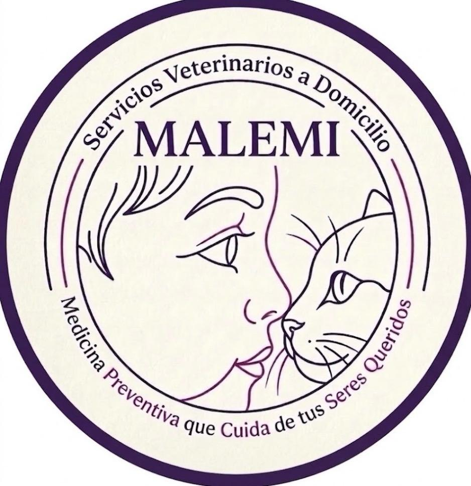

Atención médica veterinaria con amor, ética y profesionalismo.
Agendar Cita por WhatsAppEvaluación clínica integral para asegurar que tu mascota esté en óptimas condiciones de salud.
Planes preventivos personalizados para protegerlos contra enfermedades virales y bacterianas.
Recomendaciones específicas según la edad, raza y condición física de tu mascota.